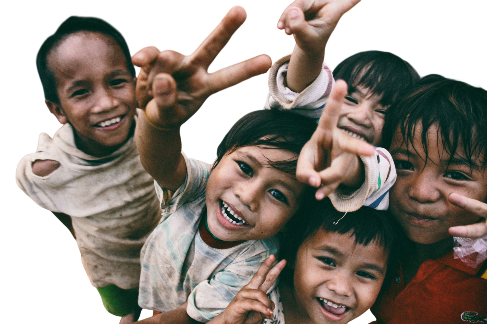

CHECKLIST KESEHATAN / 03
Lebih peka,
lebih peduli.
Perhatikan kondisi anak dalam beberapa waktu terakhir. Pilih “Ya” atau “Tidak” pada tiap pernyataan untuk membantu mencatat tanda yang perlu dikonsultasikan.

SELF-CHECK / TB AWARENESS
Checklist tanda dan gejala
Pilih “Ya” jika anak mengalami tanda yang disebutkan, atau “Tidak” jika tidak.
Penting untuk diketahui
Checklist ini hanya untuk edukasi, bukan alat diagnosis atau penentu tingkat risiko. Hasil semua “Tidak” juga tidak memastikan anak bebas TB. Jika ada gejala atau pernah kontak dengan penderita TB, konsultasikan ke tenaga kesehatan.
✳
Privasi: Checklist ini berjalan di browser dan tidak meminta nama, alamat, atau mengirim jawaban ke server.